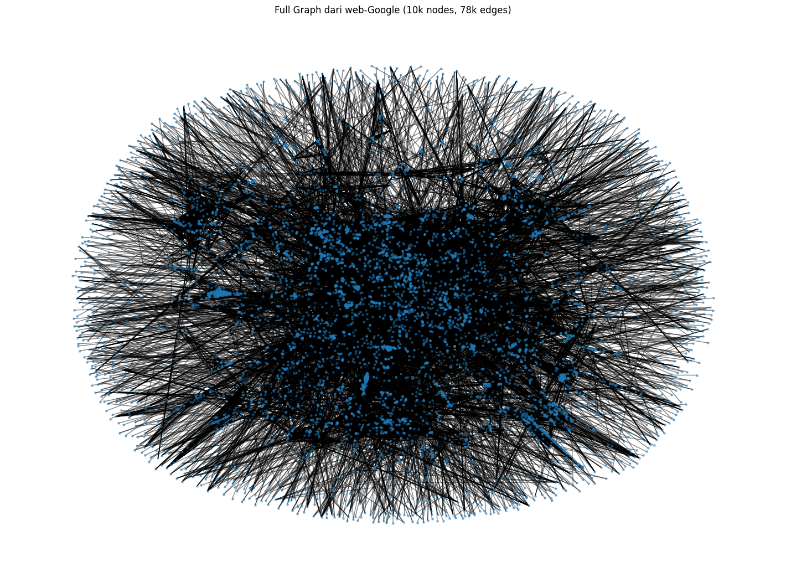
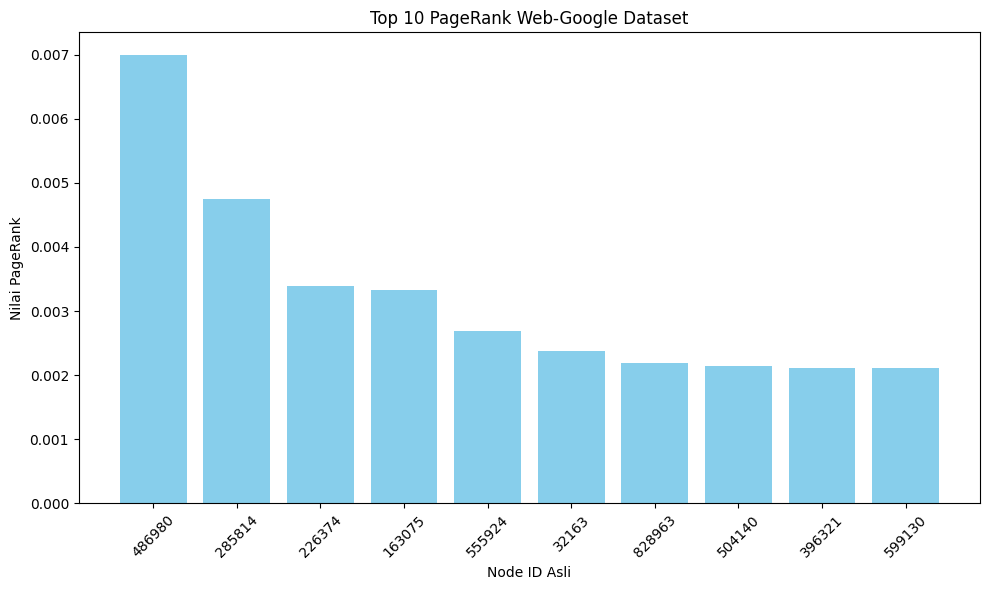

Page rank Google web#
Import package#
import pandas as pd
import networkx as nx
import numpy as np
from scipy.sparse import lil_matrix
import matplotlib.pyplot as plt
Membaca data dari file .txt#
df = pd.read_csv('dataset/web-Google_10k.txt',
delim_whitespace=True,
header=None,
names=['FromNodeId', 'ToNodeId'],
comment='#') # Baris yang diawali '#' (seperti deskripsi) diabaikan
C:\Users\willy\AppData\Local\Temp\ipykernel_15732\2736022564.py:1: FutureWarning: The 'delim_whitespace' keyword in pd.read_csv is deprecated and will be removed in a future version. Use ``sep='\s+'`` instead
df = pd.read_csv('dataset/web-Google_10k.txt',
Fungsi Manual#
def pagerank(adj_matrix, d=0.85, max_iter=100, tol=1e-6):
"""
Hitung PageRank dari matriks adjacency.
Parameters:
adj_matrix : array-like, shape (n, n)
Matriks adjacency (1 jika ada link i -> j)
d : float
Damping factor (default: 0.85)
max_iter : int
Maksimum iterasi
tol : float
Toleransi konvergensi
Returns:
r : ndarray, shape (n,)
Vektor PageRank
"""
adj = np.array(adj_matrix, dtype=float)
n = adj.shape[0]
# Tangani dangling nodes (baris dengan jumlah 0)
out_degree = np.sum(adj, axis=1)
for i in range(n):
if out_degree[i] == 0:
adj[i, :] = 1.0 # taut ke semua halaman
# Normalisasi baris → jadi matriks transisi (baris jumlah = 1)
# TAPI: PageRank asli menggunakan TRANSPOSE → aliran masuk
# Jadi kita transpos untuk membuat kolom = out-link
M = adj / np.sum(adj, axis=1, keepdims=True)
M = M.T # Sekarang M[j,i] = probabilitas dari i ke j
# Inisialisasi
r = np.ones(n) / n
teleport = (1 - d) / n
for _ in range(max_iter):
r_new = d * M @ r + teleport
if np.linalg.norm(r_new - r, 1) < tol:
break
r = r_new
return r
2. Mapping node ID menjadi index#
# Membuat index unik untuk node
nodes = pd.Index(sorted(set(df['FromNodeId']).union(set(df['ToNodeId']))))
node_to_index = {node: i for i, node in enumerate(nodes)}
# Mapping ke index
df['from_index'] = df['FromNodeId'].map(node_to_index)
df['to_index'] = df['ToNodeId'].map(node_to_index)
print(df.head())
FromNodeId ToNodeId from_index to_index
0 0 11342 0 373
1 0 824020 0 8822
2 0 867923 0 9377
3 0 891835 0 9661
4 11342 0 373 0
Buat adjacency matrix#
n = len(nodes)
adj_matrix = lil_matrix((n, n))
for _, row in df.iterrows():
adj_matrix[row['from_index'], row['to_index']] = 1
adj_matrix = adj_matrix.toarray()
Hitung PageRank#
pr = pagerank(adj_matrix)
print("Top 10 PageRank scores:")
top_nodes = pr.argsort()[-10:][::-1]
for idx in top_nodes:
print(f"Node ID asli {nodes[idx]} punya PageRank = {pr[idx]:.6f}")
Top 10 PageRank scores:
Node ID asli 486980 punya PageRank = 0.006999
Node ID asli 285814 punya PageRank = 0.004748
Node ID asli 226374 punya PageRank = 0.003396
Node ID asli 163075 punya PageRank = 0.003331
Node ID asli 555924 punya PageRank = 0.002686
Node ID asli 32163 punya PageRank = 0.002383
Node ID asli 828963 punya PageRank = 0.002190
Node ID asli 504140 punya PageRank = 0.002148
Node ID asli 396321 punya PageRank = 0.002114
Node ID asli 599130 punya PageRank = 0.002104
6. Export PageRank ke CSV#
# result = pd.DataFrame({
# "node_index": range(len(nodes)),
# "node_id_asli": nodes,
# "pagerank": pr
# })
# result.to_csv("pagerank_result.csv", index=False)
# print("\n✅ Hasil PageRank disimpan ke pagerank_result.csv")
✅ Hasil PageRank disimpan ke pagerank_result.csv
Menggunakan fungsi Network#
Membuat Graph Terarah#
G = nx.from_pandas_edgelist(df, 'FromNodeId', 'ToNodeId', create_using=nx.DiGraph())
Menghitung PageRank#
pagerank_scores = nx.pagerank(G, alpha=0.85)
Mengubah hasil PageRank menjadi DataFrame#
pagerank_df = pd.DataFrame(list(pagerank_scores.items()),
columns=['NodeId', 'PageRank'])
Mengurutkan DataFrame berdasarkan PageRank (dari terbesar ke terkecil)#
pagerank_sorted = pagerank_df.sort_values(by='PageRank', ascending=False)
top_10_nodes = pagerank_sorted.head(10)
# 3. Menampilkan hasilnya
print("10 Node dengan PageRank Tertinggi:")
print(top_10_nodes)
10 Node dengan PageRank Tertinggi:
NodeId PageRank
994 486980 0.006515
3849 285814 0.004633
113 226374 0.003301
2847 163075 0.003288
5214 555924 0.002756
3522 32163 0.002366
626 828963 0.002270
1557 599130 0.002136
3534 396321 0.002121
1274 504140 0.002098
Visualisasi Grafik#
# Plot semua node dan edge (WARNING: sangat berat)
G = nx.from_pandas_edgelist(df, 'from_index', 'to_index', create_using=nx.DiGraph())
plt.figure(figsize=(14, 10))
nx.draw(G, node_size=5, arrows=False, alpha=0.5)
plt.title("Full Graph dari web-Google (10k nodes, 78k edges)")
plt.show()

Plot 10 PageRank Teratas#
top10 = result.sort_values(by="pagerank", ascending=False).head(10)
plt.figure(figsize=(10,6))
plt.bar(top10['node_id_asli'].astype(str), top10['pagerank'], color='skyblue')
plt.xticks(rotation=45)
plt.title("Top 10 PageRank Web-Google Dataset")
plt.xlabel("Node ID Asli")
plt.ylabel("Nilai PageRank")
plt.tight_layout()
plt.show()
